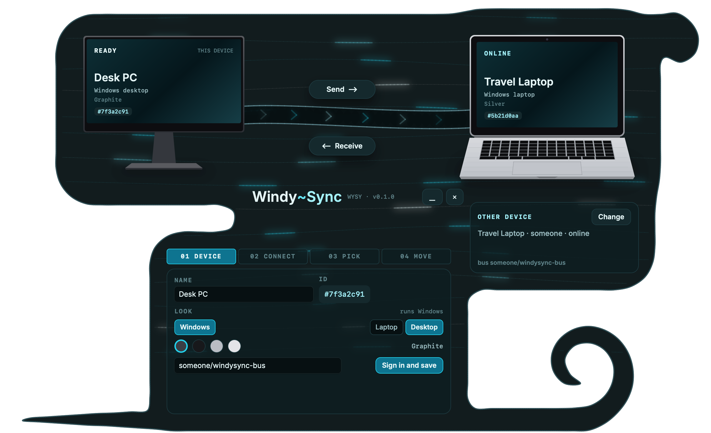

Her PC kendini çizer
Cihaz sekmesinde bu PC'yi adlandırır ve nasıl çizileceğini seçersin: bir masaüstü monitörü ya da bir laptop; grafit, siyah, gümüş ya da beyaz. Çizimlerin hepsi özgün şekiller; şirket logosu yok.

Hesabındaki PC'ler
Bu hesaptaki cihazları bul, bus deponda kayıtlı her Windows PC'yi listeler. Birini seç, göndermeyi ya da almayı seç; diğer PC sahibinin onaylayacağı ya da reddedeceği bir istek gösterir.

İşaretlediğin bir ağaç
Gönderen elindekini tarar. Alan taraf bunu türlere göre gruplanmış bir ağaç olarak, her öğenin nereye ineceğiyle birlikte görür; bir grubu işaretlemek içindeki her şeyi işaretler.

Doğrudan, ve kaldığı yerden sürer
Yalnızca seçilenler gider; ağın üzerinden PC'den PC'ye, doğrulanmış bir XChaCha20-Poly1305 akışıyla. Bir dakika hiç bayt gelmezse bağlantı kopmuş sayılır ve alan taraf gelmeyenleri yeniden ister.

Ajanının iş yapabileceği bir not
Her öğe yeni PC'de Windows'un onu tuttuğu yere iner; orada olan .before-windysync olarak saklanır. Sonra alan taraf GOAL.md'yi yazar: neyin nereye indiği, sorunlar, değişecek yollar ve kurulum için winget, Scoop, npm, cargo ve pipx listeleri.